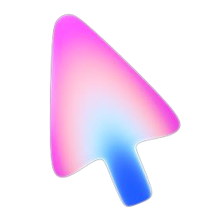

Визуальный язык кейса
Всё снято с презентации кейса «Модель маркетплейса», а не нарисовано на глаз. Шрифты определены по встроенным файлам PDF, цвета взяты из градиентных функций, размеры и радиусы из геометрии фигур. Пересчёт единиц: 1 pt слайда = 4/3 px, то есть слайд в 100% масштабе. Тема одна, светлая; язык интерфейса русский.
Цвет: ровно как в PDF
Значения сняты из объектов PDF, без пипетки по картинке. Компоненты берут только семантические токены, палитру напрямую не трогают. Производные цвета, которых нет в презентации, помечены и проверены на контраст.
Градиенты
Палитра
Типографика: гротеск и курсив
Inter Bold и Regular для всего текста. PT Serif Italic только для одного акцентного слова в заголовке, на 12.8% крупнее гротеска: так в презентации выровнены высоты строчных. Курсив синий (#328EF9) или чёрный и никогда не набирается мельче 24 px.
Сетка и отступы
Слайд 720 × 405 pt. Поля 36 pt, логотип в 18 pt от верха, заголовок с 64 pt. Карточки в списке идут с шагом 20.9 pt, плотные строки критериев с шагом 15.2 pt. В интерфейсе эти расстояния становятся токенами ниже.
Формы и радиусы
В презентации у строк-карточек радиус равен трети высоты. Отсюда правило для контролов: радиус = высота / 3. Для блоков фиксированной высоты нет, поэтому радиусы закреплены токенами.
Блоки презентации
Каждый блок повторяет слайд кейса. Для текста на градиенте используется --grad-sky-ink, исходный --grad-sky остаётся за декором.
Capibara, маркетплейс из Сан-Паулу
Главная задача
- Площадка сводит продавцов и покупателей;
- Продавец размещает карточку товара;
- Покупатель оформляет заказ, в который может попасть несколько товаров, в том числе от разных продавцов;
- Каждый продавец отгружает свою часть заказа сам;
- После получения покупатель может оставить отзыв.
Выгрузка настоящая, не учебный пример. Это открытые данные бразильского маркетплейса Olist, обезличенные, отсюда и префикс olist_ в именах файлов.
Разобраться в них тоже часть задания.
Всего около 550 тысяч строк в восьми файлах.
Схема и код
SQL-скрипт, который собирает вашу модель из raw с нуля
Ответы на вопросы
Запросы, которые будут предложены в начале и середине хакатона
Короткая записка о решениях
Не более чем на полстраницы: что выбрали, от чего отказались и почему
- Гранулярность фактов
- Работа с ключами
- Пропуски и статусы

Интерфейс продукта
Контролов в презентации нет, они выведены из её правил: радиус равен трети высоты, текст Inter Bold, действие кобальтовое, панели #F1F1F3, статус всегда точкой и словом, а не одним цветом. Высота контролов 44 px.
Средний чек 159.88 по заказам
Таблица
| Категория | Выручка | Доля |
|---|---|---|
| beleza_saude | 1 233 131.72 | 9.33% |
| relogios_presentes | 1 166 176.98 | 8.82% |
| cama_mesa_banho | 1 023 434.76 | 7.74% |
Поле, загрузка, уведомление
Движение: коротко и по делу
Токены анимации перенесены из шаблона без изменений. Анимируются только transform, opacity и clip-path. Интерфейсные переходы короче 300 мс, уход быстрее появления, без пружин. Выразительная анимация только у редких событий: обложка, первое появление блока. При системной настройке «меньше движения» длительности сжимаются до 1 мс.
Важно про данные
- Заказ оформлен
- Продавец отгрузил
- Заказ вручён
- Отзыв оставлен
Токены
--ease-out | cubic-bezier(0.23, 1, 0.32, 1) |
--ease-in-out | cubic-bezier(0.77, 0, 0.175, 1) |
--dur-press / fast / base | 140 / 160 / 200 мс |
--dur-panel / slow / draw | 260 / 320 / 900 мс |
--dur-exit / fast-exit | 140 / 110 мс |
--stagger | 40 мс |
--press-scale | 0.97, поверхности 0.99 |
Название и логотип
Варианты на выбор. Логотипы построены в геометрии RWB: штрих одной толщины, один радиус скругления по осевой, плоские срезы. Знак общий: открытая скобка, зеркальная чаше букв R и b из RWB, держит один квадрат, одну цифру для всех. Ещё кандидаты без логотипа: Plumb (отвес, эталонная вертикаль), Keel (киль, несущая основа), Ledger (книга учёта, занято криптокошельком), Even (цифры ровно). Обоснования лежат в brand/NAMING.md.
Tally
«The figures tally»: цифры сходятся. A tally это ещё и накопительный счёт, бирка с зарубками, по которой две стороны сверяли долг.
Свод
Свести цифры, свод данных для всех аналитиков, несущий свод над raw, core и mart.
Правила использования
Делаем
- Один курсивный акцент на заголовок, и только словом, несущим смысл.
- Текст на градиенте ставится только на --grad-sky-ink. --grad-sky и --grad-cover без мелкого текста.
- Статус передаётся точкой и словом, цвет только усиливает.
- Радиус контролов равен трети высоты, радиусы блоков берутся из токенов.
- Цифры моноширинные и выровнены по правому краю.
- Поля страницы 48 px, страница занимает всю ширину, панели заполняют её.
Не делаем
- Курсив PT Serif мельче 24 px и в основном тексте.
- Белый текст на светлом краю градиента: 2.42:1.
- Новые цвета и тени вне токенов, эмодзи вместо иконок.
- Длинное тире, средняя точка и вертикальная черта как разделители.
- Анимация ширины, высоты, transition: all, scale(0) и пружины.
- Тёмная тема и второй язык: система светлая и только русская.